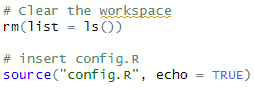

Using config.R in R#
In “Verification” stage, we ask you to keep a log of what you do. Moreover, authors often use packages that are not default programs of R. We provide template-config.R in the template repository you clone which addresses these problems. In this section, we will walk you through how to update the config.R, in the next section how to run R in a way that generates log files automatically.
Why do we have to install programs?#
R, or other statistical software, does not provide all the packages (or “libraries”, or “modules”) that enable or facilitate the analysis. Therefore, many user-written programs or extensions are publicly available for downloads. For R, this is most often comes from CRAN, but the specific “mirror” of CRAN that is used may vary. You install packages with something like
install.packages("package name")or multiple packages withinstall.packages(c("package1","package2")). You might also see the use ofremotes::install_github("r-lib/conflicted")(to install a package from Github) orinstall_version("devtools", "1.11.0")to install a specific version.We differ in installation process from many others in the sense that, we want to install programs in a specified directory that is NOT a system directory.
This is to ensure that the set of packages used by replication package is complete. A complete replication package should be stand-alone, regardless of packages installed elsewhere in the machine that program is run on.
Explaining template-config.R#
Start by copying the template-config.R into the authors’ code directory.
Installing packages#
Any libraries identified by the authors should be listed here, unless the authors already provide a setup program, or lines that install these packages.
global.libraries <- c("foreign","devtools","rprojroot")
For instance, if the authors say you need ggplot2 and nonsenseR, then add them to this line (and remember to keep case exactly as the authors provide it, so nonsenser is not the same as nonsenseR).
global.libraries <- c("foreign","devtools","rprojroot","ggplot2","nonsenseR")
S-drive, L-drive#
In some cases, authors provide us privately with data that is not part of the public replication package (the part on openICPSR is generally public). We put this on the L-drive, or what used to be called the S-drive. Put the location of that here, if any:
s-drive <- "L:/Workspace/aearep-9999-implicit-nda"
Note
If you are working on Windows (e.g. CCSS-Cloud) then you would need to use / or \\ to write filepaths or use the file.path() function. So, for example, the above would become:
s-drive <- "L:\\Workspace\\aearep-9999-implicit-nda"
Wherever the author later references the confidential data, you can insert this placeholder, for instance:
# original author reference
# ols.data <- readRDS("data/confidential/analysis.Rds")
# you change it to
ols.data <- readRDS(file.path(s-drive,"data/confidential/analysis.Rds"))
Directory paths for log files, libraries, and other things#
config.R creates a subdirectory for log files, but does not automatically create the log file (in contrast to Stata). Here, you should add any additional directories that your debugging identifies as being necessary. Do write any path names with /, not \, and leave the directory names already listed untouched.
create.paths <- c("logs","libraries")
For instance, if the authors state that output should be written to “outputs”, you can add
create.paths <- c("logs","libraries","outputs")
The config.R will create these directories if they do not exist, later on.
Base directory#
The base directory (or here, rootdir) is the directory that contains the replication package, as intended by the author. How do you figure that out?
Example 1:
aearep-9999/
123456/
Replication-package/
code/
data/
README.pdf
In this case, the base directory is aearep-9999/123456/Replication-package/.
Example 2:
aearep-9999/
123456/
code/
data/
README.pdf
In this case, the base directory is aearep-9999/123456/.
You do not actually need to hard-code this in the config.R file. We will use a package called here, which can detect this automatically, if some files are present:
The author has a
rprojfile - it will take that as the base directory.The (hidden) file
.hereis present - it will take the directory that contains that as the base directory.
The here package will get confused by the presence of our git setup, so if the two above files are not present, we need to manually create the latter:
cd 123456/Replication-package
or
cd 123456
and then
touch .here
git add .here
depending on the case. Now R will set the root directory correctly.
Note
If for some reason that does not work, simply override the automatic detection, by setting the rootdir manually, using / or \\ as appropriate for your OS:
rootdir <- "C:/user/Workspace/aearep-9999/123456/Replication-package"
Package installation source#
As mentioned earlier, there are multiple sources for the R libraries. We generally use the Posit Package Manager (PPM), which provides a snapshot functionality. We pick a date that is close to the date you run this, check whether it is a weekday (because for some reason, PPM does not take snaphshots on weekends), and then configure R to look there for packages. This is both faster and more reliable - mostly. It can sometimes fail.
posit.date <- Sys.Date() - 31
# posit.date <- "2020-01-01" # uncomment and set manually if the above does not work
If you have to re-run this multiple times, and add on packages, this might get out of sync with the first time you ran it, so you might adjust the posit.data manually.
Installing packages#
If the author’s code does not provide install commands, you will need to add any missing packages to a particular location in the config.R:
# global.libraries <- c("devtools","rprojroot")
# For example, you can add on two additional ones:
global.libraries <- c("devtools","rprojroot","readxl","ggplot2")
This will then install the libraries locally.
System information#
We require system information as part of the replication package. This is because some commands are sensitive to the OS, R version, machine type, etc. We use the sessionInfo() command to get this information.
How to use config.R#
Rename the config file.#
The template is called template-config.R. In order to use it, rename it to config.R and move it into the right folder. If there is a main file created by the author, put it next to that. If there is NOT a main file, put it into the folder that the author says to run the code from.
[ACTION] Check the README or the repository and determine if a master R file was provided.
Include config.R or create main.R#
If there is a main file…#
If there is a main file (say main.R), you should put the following line at the beginning of the main.R:
source("config.R", echo = TRUE)
Caution:
If there are lines such as rm(list=ls()) at the start of the main.R, you should put the source() statement AFTERWARDS (otherwise all the information in the config.R would get cleared):
rm(list=ls())
source("config.R", echo = TRUE)

If there is NO main file…#
If there is no main file, rename
config.Rtomain.R, and add the authors’ code files to the end:
source("01_data.R", echo = TRUE)
source("02_analysis.R", echo = TRUE)
source("03_figures.R", echo = TRUE)
Caution:
If there are lines such as rm(ls()) in the various files provided by the author, you should comment them out:
# rm(ls())
... (rest of code)